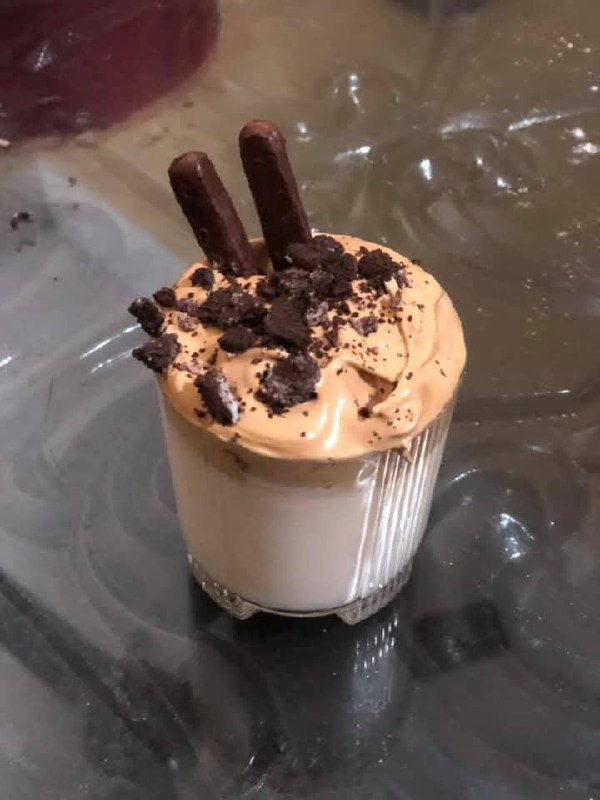

Dalgona Coffee
Ingredients
- 2 tbsp instant coffee
- 2 tbsp sugar
- 2 tbsp hot water
- 1 cup cold or hot milk
- Ice cubes (optional, for cold version)
Instructions
- In a bowl, add coffee, sugar, and hot water (equal amounts).
- Whisk or beat the mixture using a spoon, hand whisk, or electric beater for 3-5 minutes until it becomes thick, creamy, and foamy.
- Fill a glass with milk (cold or hot) and ice cubes if you like.
- Spoon the whipped coffee foam on top of the milk.
- Gently mix before drinking — and enjoy your beautiful Dalgona Coffee!